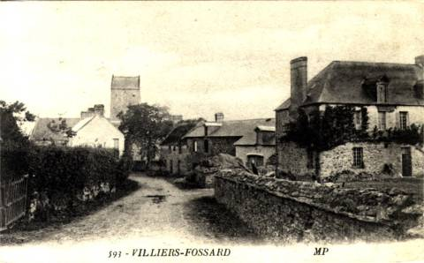
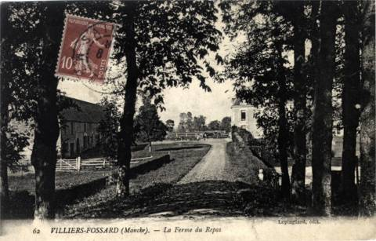
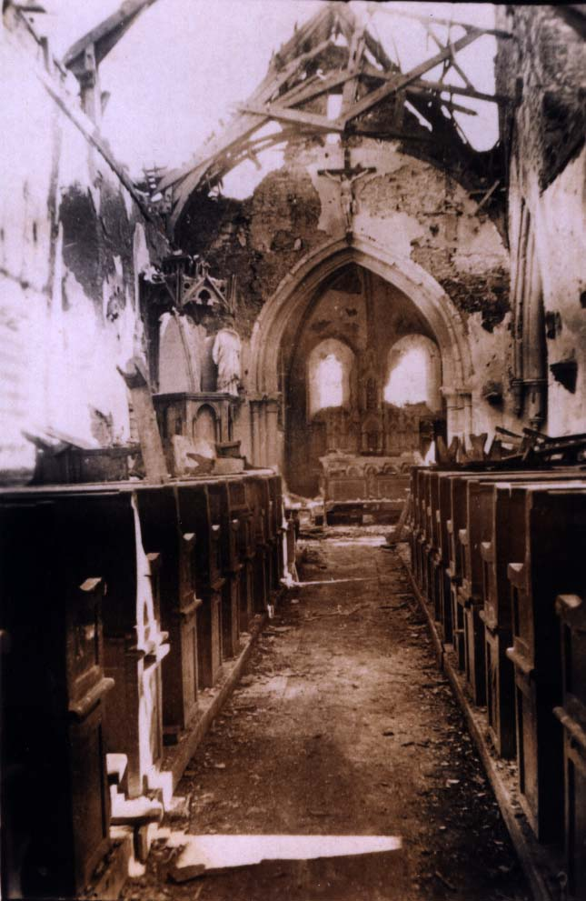

- La Mairie et les Ecoles

- Vue du Bourg 1

- Vue du Bourg 2

- La ferme du Repas 1

- La ferme du Repas 2

Les cinq cartes postales ci-dessous dates du début du siècle. Certaines vues ont bien changé aujourd'hui, la mairie par exemple ayant été détruite lors du débarquement.
- La Mairie et les Ecoles
- Vue du Bourg 1

- Vue du Bourg 2
- La ferme du Repas 1
- La ferme du Repas 2

Cette dernière image n'est pas une carte postale mais une photographie de l'église prise en 1944 :

_La mairie et les écoles communales